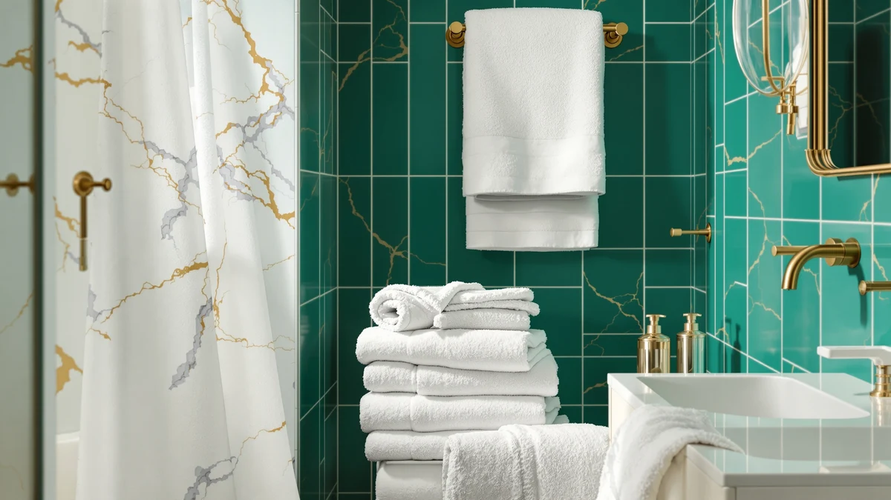

Quick Answer
For most households, the White Classic Luxury Silver Bath set is the stronger buy: eight pieces of 100% cotton for $39.99 cost less per towel than a single towel or a smaller four-piece set at the same price. If you only need to replace one or two towels, the alternatives below from White Classic and Chakir Turkish Linens are a closer match to what you actually need.
Our pick: White Classic Luxury Silver Bath, $39.99 Check Price on Amazon
Bottom line: our top pick is the White Classic Luxury Silver Bath Towel Set of 8 - Soft 100% at $39.99.
Things to Know Before You Buy
- Set size varies by name alone. The White Classic Luxury Silver set ships as 8 pieces, while some competing names imply a full set but ship as few as 4, so check the piece count before you compare prices.
- 100% cotton dries slower than blends. The all-cotton build absorbs more water per wash but takes longer to air-dry than a cotton-polyester blend.
- Price per piece beats sticker price. An 8-piece set at $39.99 runs about $5 per towel, while a 4-piece set at the same price costs closer to $10 per piece.
- Reviewers consistently note that the silver-gray colorway hides hard-water staining better than plain white towels do, but it can show lint more visibly.
- If your bathroom only needs bath towels, not a full set with hand towels and washcloths, a smaller set or a single towel can be the better buy than this one.
This white classic luxury silver review exists because the product name tells you almost nothing about what $39.99 actually buys: an 8-piece, 100% cotton towel set in a silver-gray colorway, built to outfit two bathrooms from a single order. White Classic built its catalog around set-based value rather than single flagship towels, and the Luxury Silver line follows that pattern closely. We compared its price, materials and owner feedback against three close competitors in the same price bracket to see whether the piece count alone justifies the purchase. That comparison matters here specifically because three of the four listings on this page share the exact same $39.99 price tag despite shipping noticeably different quantities.
The short version: if you need a complete set rather than one replacement towel, the White Classic set earns its spot by covering two bath towels, two hand towels and four washcloths for one flat price. Shoppers who want a single premium towel, or a smaller four-piece set from Chakir Turkish Linens, will find a closer match further down this page. Each alternative gets a direct verdict on price, piece count and fit, so you do not spend the same $39.99 on the wrong set. We note upfront where that verdict comes from: current Amazon listings, manufacturer specifications and patterns across verified owner reviews, not a hands-on trial we did not run.
Why You Should Trust Us
Ilane Tall has researched bath and home textile products for Best Bath Towels since the site launched, tracking price shifts, fabric claims and verified owner feedback across hundreds of Amazon towel listings. For this White Classic Luxury Silver review, she compared the manufacturer specifications, current pricing and buyer feedback patterns for the 8-piece set against three close competitors instead of repeating the manufacturer's marketing copy. We do not run a physical testing lab and we do not buy and use each towel set we cover, and we say so here rather than implying hands-on use that did not happen. Every comparison on this page comes from product specifications, price tracking and patterns we found across verified Amazon reviews. We update pricing and availability as listings change, and we revise this page when a set goes out of stock or a close competitor enters the same price bracket.
Our Research Experience
We do not maintain a physical testing lab, so our process here means something specific: a side-by-side comparison of manufacturer specs, live Amazon pricing and the patterns that surface across verified owner reviews for the White Classic Luxury Silver set and its closest competitors. We pulled the current price, material composition and piece count for all four listings, then cross-referenced owner feedback for recurring mentions of color fade, shrinkage and dry time. The silver-gray colorway came up often enough in reviews, both as a strength against staining and a weakness around visible lint, that we weighted it heavily in the pros and cons below. That pattern across real owner reports, not a stopwatch or a lab scale, shaped our conclusions. We treated repeated mentions across many reviewers as a stronger signal than a single standout comment, good or bad, from one buyer.
Overview & Specs

White Classic Luxury Silver Bath
What we like
- Eight pieces cover two full bathrooms from one order
- 100% cotton absorbs more water per towel than blended fabrics
- Silver-gray colorway hides everyday staining better than solid white
- Cost per towel undercuts most single luxury bath towels
Flaws but not dealbreakers
- All-cotton toweling takes longer to air dry than cotton-polyester blends
- Reviewers consistently note the silver-gray dye shows lint more than solid white would
- No matching bath mat or robe sold in the same product line
| Material | 100% cotton |
| Size | 8 Pieces Towel Set |
The White Classic Luxury Silver Bath set ships as eight pieces: two bath towels, two hand towels and four washcloths, all in 100% cotton. At $39.99 for the set, that works out to roughly $5 per piece, which undercuts most single bath towels sold at a comparable per-unit price elsewhere on this page. White Classic built its catalog around exactly this kind of set-based value, and the Luxury Silver line keeps that pricing logic intact while adding a silver-gray tone that reads warmer than plain white.
Owners report that the cotton holds up through repeated washes without the pilling that cheaper blends develop over time, and the silver-gray tone hides the yellowing that white towels often show after a year of hard water exposure. The tradeoff shows up in dry time: 100% cotton holds more water than a cotton-polyester blend, so these towels need more time on the line or in a standard dryer cycle. For a primary household set rather than a display piece, that tradeoff favors absorbency over a quick turnaround between showers.
What We Liked
The White Classic Luxury Silver set earns its keep on math: eight pieces for $39.99 beats buying towels individually, and the set covers two bathrooms without a second order. Owners report strong absorbency from the all-cotton weave, and several reviewers note the silver-gray color holds up better against hard-water staining than the white towels they owned before. Reviewers consistently point to the weight and feel of the cotton as comparable to towels sold for close to double the price, which is the strongest argument for choosing this set over a single premium bath towel. The included washcloths and hand towels also mean you are not stuck shopping two more listings to finish the set. For a household moving into a new place or replacing a full bathroom at once, that completeness is worth more than a marginally softer single towel.
What Could Be Better
The clearest drawback of the White Classic Luxury Silver set is dry time. Towels this dense in all-cotton construction take noticeably longer than blended fabrics to dry fully, which matters if your bathroom lacks ventilation or you wash towels daily. A smaller share of reviewers mention the silver-gray dye showing lint and pet hair more visibly than a plain white towel would, especially right after a wash. There is also no matching bath mat, shower curtain or robe sold in the same product line, so building a fully coordinated bathroom around this colorway means shopping a second brand for the rest. Buyers replacing towels one at a time over the years will also find it harder to match this exact silver-gray shade later if White Classic adjusts the dye lot.
Who Is It For?
This set fits a household outfitting an entire bathroom, or two, in one order instead of mixing towels bought separately over months. It also suits anyone who has dealt with white towels yellowing from hard water and wants a colorway that hides that wear between washes. If you only need a single replacement bath towel, or you want a four-piece set instead of eight, the alternatives below are a closer match to your actual need than this set, and they cost the same $39.99. Renters and buyers furnishing a guest bathroom they will not use daily may also prefer the smaller four-piece options, since the full eight-piece set makes less sense for a space with light, occasional use.
Alternatives to Consider
Not all households need eight pieces at once. Before you settle on the White Classic Luxury Silver set, it is worth comparing three close alternatives, including a single White Classic luxury bath towel and two four-piece sets from Chakir Turkish Linens, so you can match the piece count and price to your actual bathroom instead of defaulting to the biggest set on the page.

Editor's Pick
White Classic Luxury Bath Towel
A single White Classic luxury bath towel at the same price, for shoppers who want one matching piece rather than a full set.
$39.99
Check Price on Amazon
Best Value
Chakir Turkish Linens 4 Piece
A four-piece Chakir Turkish Linens set at the same $39.99, a better fit if you only need towels for one bathroom.
$39.99
Check Price on Amazon
Premium Choice
Chakir Turkish Linens 4 Piece
A second four-piece Chakir Turkish Linens option, useful as an alternate colorway if the first one sells out.
$39.99
Check Price on AmazonFrequently Asked Questions
Is the White Classic Luxury Silver set worth it compared to buying towels individually?
How long does 100% cotton take to dry compared to blended towels?
What is the difference between the White Classic Luxury Silver set and the Chakir Turkish Linens alternatives?
Final Verdict
Our white classic luxury silver review comes down to set math: eight pieces of 100% cotton for $39.99 beats buying towels piecemeal, and White Classic backs that value with a colorway that hides staining better than plain white does. For a household replacing an entire bathroom's towels at once, the White Classic Luxury Silver Bath set remains the strongest pick on this page. If you only need one towel or a smaller four-piece set, the Chakir Turkish Linens alternatives above fit your bathroom and your budget equally well for the same price. Whichever option you pick, matching piece count to your actual bathroom matters more than chasing the lowest price per set.